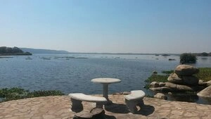
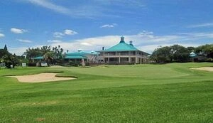
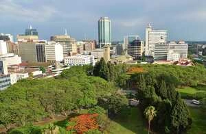
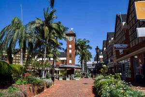
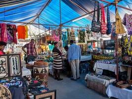

National Botanic Gardens
Herbert Chitepo Avenue, HarareThe National Botanic Gardens is a peaceful sanctuary that houses a diverse collection of plants from Zimbabwe and around the world, ideal for nature walks and picnics.

The National Botanic Gardens is a peaceful sanctuary that houses a diverse collection of plants from Zimbabwe and around the world, ideal for nature walks and picnics.
Meikles Hotel is one of the most luxurious and historic hotels in Zimbabwe. It offers elegant accommodations, fine dining, and a prime location in the heart of Harare.
A museum dedicated to showcasing Zimbabwe's archaeological history, ethnography, and cultural heritage. It's home to historical artifacts and displays representing Zimbabwe's early civilizations.

A large man-made reservoir surrounded by scenic wildlife and birdwatching opportunities. Lake Chivero is a popular spot for boating, fishing, and outdoor relaxation.

A beautiful 18-hole golf course known for its lush fairways and challenging holes. It's a must-visit for golf enthusiasts and those looking to enjoy nature in a peaceful environment.

Situated in the heart of Harare, the gardens are a peaceful retreat with beautifully landscaped areas, fountains, and a variety of plant species. It's a popular spot for relaxation and outdoor events.

A modern shopping and dining hub in Harare's Borrowdale area, Sam Levy's Village offers a variety of stores, restaurants, and recreational activities. It's a great place for a leisurely day out with family and friends.

A vibrant market that offers a wide range of items including clothing, jewelry, art, and local crafts. It's a perfect place to experience the hustle and bustle of Harare's local commerce.